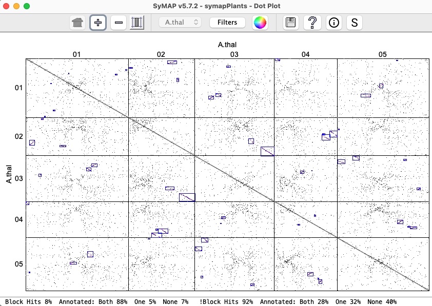

|
| SyMAP System Guide |


| |
| |||
| The following discusses building a SyMAP v5 database. Bold face blue links are to external pages. | |
| Contents | |
| 1. Introduction 2. Requirements 3. Demo |
4. New project
|
| For Transcriptome Analysis and Comparative Transcriptomes, see TCW. | |
Introduction
Overview | Go to top |
Its features include the following (for a pictorial introduction, see the Tour):
|
|


Publications | Go to top |
C. Soderlund, M. Bomhoff, and W. Nelson (2011)
SyMAP: A turnkey synteny system with application to plant genomes.
Nucleic Acids Research 39(10):e68.
C. Soderlund, W. Nelson, A. Shoemaker and A. Paterson (2006)
SyMAP: A System for Discovering and Viewing Syntenic Regions of FPC maps
Genome Research 16:1159-1168.
SyMAP is freely distributed software, however
if you use SyMAP results in published research, you must cite one
or both of the above articles along with the external program MUMmer1,2.
Steps for finding synteny | Go to top |
| 1. | Use a Linux or MacOS machine. | It needs to have Java v17 or later, and sufficient processing power. See system requirements. |
| 2. | Set up MySQL. | See MySQL. |
| 3. | Download SyMAP. | Installation is a simple unzip. See installation. |
| 4. | Run the demo. | Highly recommended. See running the demo. |
| 5. | Prepare sequences and annotation. | Sequences are in fasta file(s); see sequence files. Annotation format is gff3; see annotation files. NCBI and Ensembl files can be converted with the toSymap. |
| 6. | Load the files into SyMAP. | The SyMAP interface makes this easy; see creating a new project. |
| 7. | Compute alignments and synteny. | This is also easy through the SyMAP interface. See runtime and memory. |
| 8. | View results. | Detailed description of the user interface is in the User Guide. |
Requirements
System Requirements | Go to top |
The machine must be a 64-bit machine (32-bit will no longer work starting with v5.5.1).
The released symap.jar file has been compiled with Java 17.0.11, which is upward compatible. If you need a version compile with Java 1.8, email symap@agcol.arizona.edu.
For performing large alignments (e.g. 1Gb genomes or more) it is essential to have multiple CPUs and at least 5Gb of RAM for each CPU that you intend to use. Note that you can set the number of CPUs for SyMAP to use. See MUMmer for information on insufficient memory.
For viewing alignments, CPU and memory needs are typically negligible, unless you are performing queries on more than 4-5 genomes at once.
SyMAP has been tested on the following:
| Machine | MySQL | Java | Core | Memory | Purchased |
| MacOS x86_64 (Sonoma 14.4.1)1 | MySQL v8.0.33, MariaDB 11.0.2 | 8, 15, 17, 18, 20 from
Adoptium and Oracle | 3.2 GHz 6-Core | 64 GB | 2018 |
| Linode (Ubuntu 22.04.2 LTS)2 | MySQL 8.0.33 | 17 | Nanode | 1 GB | 2023 |
| Linux amd64 (Centos)3 | MariaDB v10.4.12 | 1.8 | 2.3 GHz 24-Core | 128 GB | 2011 |
| MacOS x86_64 (Catalina 10.15.4) | MySQL v8.0.17 | 17.0 | 3.2 GHz 6-Core | 64 GB | 2018 |
| MacOS x86_64 (Maverick 10.9.5)4 | MySQL v5.6.21 | 1.8 | 2.4 GHz 5-Core | 16 GB | 2011 |
• Arabidopsis thaliana (119MB), Brassica Rapa (297MB) and Brassica oleracea (447MB);
• Prunus persica (227MB) with draft Prunus yedoensis (449MB);
• Chromosomes 5,17,X of Homo sapiens (420MB), Mus musculus (412MB) and Pan troglodytes (420MB)
and all chromosomes of Oryctolagus cuniculus (rabbit, 2GB).
2 Linode nanode was too small to run MUMmer, so the MUMmer demo result files were transfered to the data/seq_results/demo_seq_to_demo_seq2 directory. This allowed all other features to be tested on a small database.
3 Linux amd64 was used extensively on large plant genomes, e.g. maize (2365MB), rice (400MB) and sorghum (730GB).
4 MacOS Maverick is an old laptop. I could not download from Github, so downloaded v5.0.8 from AGCoL. Then I had to replace /ext/mummer/mac with /ext/mummer/mac_pre506. This machine is fine for viewing a SyMAP database, but too small to process large input files.
Installation | Go to top |
> tar -xf symap_5.tar.gzThis can be done anywhere and it creates a directory called symap_5. You can move this directory later if desired. The contents are:
LICENSE README data/ ext/ java/ scripts/ symap symap.config viewSymap xToSymapData: The data/ directory contains a /seq sub-directory, which contains the demo files, and is the default location for all input sequence files.
Externals: The ext/ directory contains the external programs MUMmer1,2 (for sequence alignment) and MUSCLE7 (for Queries). The directory contains:
README mummer/ mummer4/ muscle/For MUMmer, see Executables and Using MUMmer4. On MacOS, you may also need MacOS externals.
MySQL and parameters | Go to top |
Important Note: The default settings of MySQL are poorly suited for large-scale data storage. You will want to adjust the parameters innodb_buffer_pool_size and innodb_flush_log_at_trx_commit as described in Trouble Shoot MySQL.
Parameters for accessing the MySQL database should be set in the symap.config file in the main symap directory, as follows:
| Database Parameters | |
| db_name | Name of the MySQL database, which SyMAP will create when it first reads symap.config. It is standard to start the name with symap, e.g symapDemo. |
| db_server | The machine hosting the MySQL database, e.g. myserver.myschool.edu. If using your local machine, enter localhost. |
| db_adminuser | MySQL username of a user with sufficient privileges to create a database. It is also necessary for loading, deleting and running synteny. |
| db_adminpasswd | Password of the admin user. |
| db_clientuser | MySQL username of a user with read-only access. This is only necessary if you want a machine to run viewSymap as read-only. |
| db_clientpasswd | Password of the client user (if db_clientuser is non-blank). |
Example symap.config.
db_name = symapDemo db_server = localhost db_adminuser = <adminid> db_adminpasswd = <password> db_clientuser = db_clientpasswd =To use an alternative file than symap.config, use the "-c" command line argument, e.g.
>./symap -c symapTmp.configThis is useful if you have multiple SyMAP databases.
Runtime and Memory | Go to top |
The largest component of SyMAP execution time is in running MUMmer1,2. The time and memory for MUMmer all depends on the size of the genomes. For example, to align rice (12 chromosomes, 370Mb) to maize (10 chromosomes, 2Gb) required 1 hour and 3 minutes using 8 CPUs with 2.3Ghz speed.
The memory usage of MUMmer is typically 5G per CPU, however it can be as high as 10G for very long or repetitive chromosomes. If MUMmer fails, it is often due to insufficient memory, see the MUMmer document, which explains how to determine the problem and ways around it. It also explains the CPU and Concat options. It also explains how to run MUMmer on a different machine and port the results to the symap_5/data/seq_results directory.
Demo
Running the Demo | Go to top |
- Change into the symap_5 directory.
- Edit symap.config and enter database
and host information (see MySQL).
- From the command line, type ./symap.
The first time you run SyMAP, it will create the database with information written to the terminal, e.g.
Creating database 'symapDemo' (jdbc:mysql://localhost/symapDemo?characterEncoding=utf8).
It will check your MySQL variables; if there are any "Suggested" changes, see Trouble Shoot MySQL.
It will also check that the provided external programs (e.g. MUMmer) are executable; if it shows any problems, see Executables. For MacOS, you may also need MacOS externals.
Synteny between two genome sequences | Go to top |
|
The | |
|
A link If loading the Demo-Seq takes more than a few minutes, you may need to adjust the MySQL parameters, see TroubleShoot MySQL. When done, the Manager will look like the image shown on the right.
In the Click the |

|
|
The When done, the table will have a checkbox, signifying that the synteny is available for viewing. |

|
|
Click To view the other interfaces, see Demo Results.
Once the alignments are computed, the |

|
{kind=link}
{kind=link}
Draft alignment and ordering | Go to top |
| Load the Demo-Draft project. Under the Demo-Draft listing, you will see the parameter "Order against: demo_seq2". With this setting, the Demo-Draft contigs will be ordered using synteny to Demo-Seq2; this was set in the project's Parameters window. |

|
|
Run the It is recommended that the |

|
The ordering algorithm changes the order of the draft contigs in the database, but does not change the sequence files on disk. However, it writes the following files:
1. File of ordered contigs: It writes the order of the contigs along with whether they should be flipped to a file called /data/seq/demo_draft/ordered.csv.
2. Fasta files of ordered sequences: It creates sequence files from the ordered contigs that are flipped when appropriate, which are put into a new project with the suffix "_ordered", as shown in the image below. The chromosome names correspond to the order-against project (e.g. demo_seq2), and the third chromosome is 'chr0' which contains all draft sequences that were not placed.
|
As shown in the image on the left, a new project has been added. Click Demo_Draft-ordered and
load it.
Running the |

|
Self alignment
The section on Self alignments discusses the self-alignment of the Demo_Seq project.New Project
Creating a new project | Go to top |
|
To create a new project via the SyMAP interface, press the
|

|
|
After saving the new project, it appears in the |
{kind=link}
Input | Go to top |
Interface and Parameters | Go to top |
Running MUMMmer in SyMAP | Go to top |
Draft alignment and ordering | Go to top |
- Load both sequences.
- For the draft, bring up the project's
Parameters window. Beside the
Order against row is a drop-down of all loaded projects; select your whole genome project. - Run the
Alignment&Synteny . At the end, you will see a new project with the suffix _ordered in the left panel. It will contains:- A sequence directory with a ".fa" FASTA file. Any scaffolds matching the Order against genome will be assigned the same chromosome name. All scaffolds aligning to an Order against chromosome will be appended together in order with 100 N's between each scaffold. Any extra sequences will be put in ">Chr0".
- An annotation directory with a ".gff" file that specifies where the gaps are.
- Load the _ordered project. Then run
Alignment&Synteny between the whole genome project and the new _ordered project.
If the draft sequence is in too many sequence pieces,
(1) it takes a long time for the MUMmer comparisons, (2)
the display is very cluttered, and
(3) the blocks display does not work right. Limit the number of sequence pieces
by setting Minimum length in the project's
Parameter window
to only load the largest 150 sequences;
use the
Self alignments | Go to top |
| To perform self-synteny, select the cell for the same project followed by
| 
|
By default, SyMAP uses the MUMmer 'NUCmer' program for self-alignments. Each chromosomes is compared to every other chromosome including itself.
The Alignment&Synteny
Parameters window has an option to set
| The self-synteny of demo_seq shows a few tiny blocks. A better demonstration is to download Arabidopsis thaliana from NCBI, convert it with the NCBI convert script, and run the self synteny. It took 16 minutes with one processor on a Mac Mini (2018) with 64GB main memory. The dot plot is shown on the right (click on the image for a closeup view). |  |
{kind=link}
The "--maxmatch" parameter was the SyMAP default, but now it is up to the user as to whether
they want to add it to
Cancel | Go to top |
| The Occasionally, the If MUMmer is running when you | 
|
General
How to update SyMAP with a new release | Go to top |
- If the symap.jar is available from the download site and there are only changes to it, download it and replace the one in symap_5/java/jar.
- Put the new symap_5.tar.gz in a permanent location and untar it.
- Replace the /data and symap.config from your previous SyMAP location to this new location.
- This approach is safest as it acquires all changes (e.g. scripts) except for changes to the demo files.
- Put the new symap_5.tar.gz in a temporary location and untar it.
- Move symap_5/java/jar/symap.jar to the java/jar location of your permanent SyMAP.
- Check to see if there are any /scripts or /ext changes that need to also be copied over.
The following table shows what versions require action by the user.
| Release | Changed files1 | Action by User |
| v5.5.6 | Only the symap.jar | Execute ./symap -acs,
then select the pair and run a popup will have you confirm "Collinear only" indicating that only this algorithm will be run. |
| v5.4.6-5.4.8 | Only the symap.jar | |
| v5.4.1 | Only the symap.jar | Execute ./symap -y |
| v5.4.0 | Only the symap.jar | |
| v5.2.0 | symap, viewSymap, scripts/ConvertNCBI.* | |
| pre-v5.1.9 | Only the symap.jar | Delete the database, reload and |
- Always get the new java/jar/symap.jar.
- The
Alignment&Synteny will use existing MUMmer files if they have not been removed.
Directory structure | Go to top |
/data/seq/<project-name>/sequence /data/seq/<project-name>/annotationYou may do one of the following:
- Create these sub-directories under /data/seq and put your files there.
- Create these sub-directories under /data/seq and use soft links to point to the file locations,
e.g.
cd data/seq mkdir foobar cd foobar ln -s <location of directory of sequence files> sequence ln -s <location of directory of annotation files> annotation
- Use the project's parameter window to enter the location of the sequences and optional annotation.
The file results of the alignment and synteny computations are is as follows:
/data/seq_results/<project-name1>-to-<project-name2>/align /data/seq_results/<project-name1>-to-<project-name2>/finalAfter the database is complete, these can be removed. However, sometimes SyMAP version updates require the project files to be reloaded and/or the synteny to be recomputed; if these files remain, the existing MUMmer files will be used, which saves a lot of time.
The log files are in the /logs directory, see Running MUMmer for more details.
How SyMAP Works | Go to top |
The sequences are written to disk*, with gene-masking if desired. In the alignment, one species is "query" and the other is "target". The query is the one with alphabetically the first name. The query sequences are written into one large file, while smaller target sequences are grouped into larger FASTA files of size up to 60Mb, for more efficient processing in MUMmer. There is an option
Anchor Clustering and Filtering:
The raw anchor set consists of the hits found by MUMmer, which are filtered and clustered for input to the synteny algorithm.
Algorithm 1 (original) is good for medium-to-high divergent genomes, aligning draft sequence, self-synteny, and genomes with little or no annotation. The MUMmer hits are first clustered into gene, or putative-gene hits. This is done by clustering the hit regions on each sequence, and then defining new "gene" hits which connect these regions. For example if three separate exons hit between two genes, they will be clustered into one "gene" hit having a combined score equal to the sum of the raw hit scores. Clustering is by gene if the hits overlap annotation, otherwise, it creates "candidate genes" from hits that do no overlap annotation.
The clustered "gene anchors" are then filtered using a version of
reciprocal-best filtering which is adapted for retaining duplications and
gene families. For each pair of genes (or putative genes) which is
connected by a clustered anchor, the retained anchors must be among
the top two anchors by score on both sides (top-2 allows for one
ancestral whole-genome duplication). An anchor will also be retained if its
score is at least 80% of that of the 2nd-best anchor on each side (this
allows for retention of gene family anchors). These filter parameters
may be adjusted through the
Algorithm 2 (gene-centric) is good for low-to-high divergent genomes with good annotation. It directly maps hits
to the exons and introns. Hits aligning to un-annotated regions are clustered separately. There are many more parameters for
this approach, as the hits are filtered based on the parameter values.
Synteny Block Detection:
After the clustered anchors are loaded into the database, the synteny
synteny block algorithm runs. This algorithm looks for approximately-collinear
sequences of anchors, subject to several parameters including (A) Number
of anchors; (B) Collinearity of the anchors; (C) Amount of "noise" in the
surrounding region (to help reject false-positive chains). Criterion A can
be adjusted in the
* Note that the sequences are re-written from the database to the disk for three reasons: (A) To allow re-grouping for efficiency; (B) To ensure elimination of invalid characters; (C) To mask non-gene regions, if desired. This also ensures that sequences names will match those in the database, and prevents problems caused by moving the source sequences on disk.
FPC project | Go to top |
- It has the FPC demo files.
- It has BLAT3 in the /ext directory.
- It has the tar file doc.tar.gz of the documentation.
- The AGCoL documentation applies to this release. See AGCoL System Guide.
- This is the last release made from AGCoL, so the documentation will stay consistent.
- It is also available from Github.
References | Go to top |
2 Marcais, G., A.L. Delcher, A.M. Phillippy, R. Coston, S.L. Salzberg, A. Zimin (2018). MUMmer4: A fast and versatile genome alignment system, PLoS computational biology, 14(1): e1005944.
3 Kent, J. (2002) BLAT--the BLAST-like alignment tool, Genome Research 12:656-64.
4 Krzywinski, M., J. Schein, I. Birol, J. Connors, R. Gascoyne, D. Horsman, S. Jones, M. Marra (2009). Circos: An information aesthetic for comparative genomics. Genome Research doi:10.1101/gr.092759.109.
5 Soderlund, C., Nelson, W., Shoemaker, A., and Paterson, A.(2006). SyMAP: A system for discovering and viewing syntenic regions of FPC maps. Genome Res. 16:1159-1168.
6 Soderlund, C., Bomhoff, M., and Nelson, W. (2011). SyMAP: A turnkey synteny system with application to multiple large duplicated plant sequenced genomes. Nucleic Acids Res V39, issue 10, e68.
7 Edgar, R (2004). MUSCLE: a multiple sequence alignment method with reduced time and space complexity. BMC Bioinformatics 113.
8 Soderlund, C., S. Humphrey, A. Dunhum, and L. French (2000). Contigs built with fingerprints, markers and FPC V4.7. Genome Research 10:1772-1787.
9 Engler, F., J. Hatfield, W. Nelson, and C. Soderlund (2003). Locating sequence on FPC maps and selecting a minimal tiling path. Genome Research 13:2152:2163.